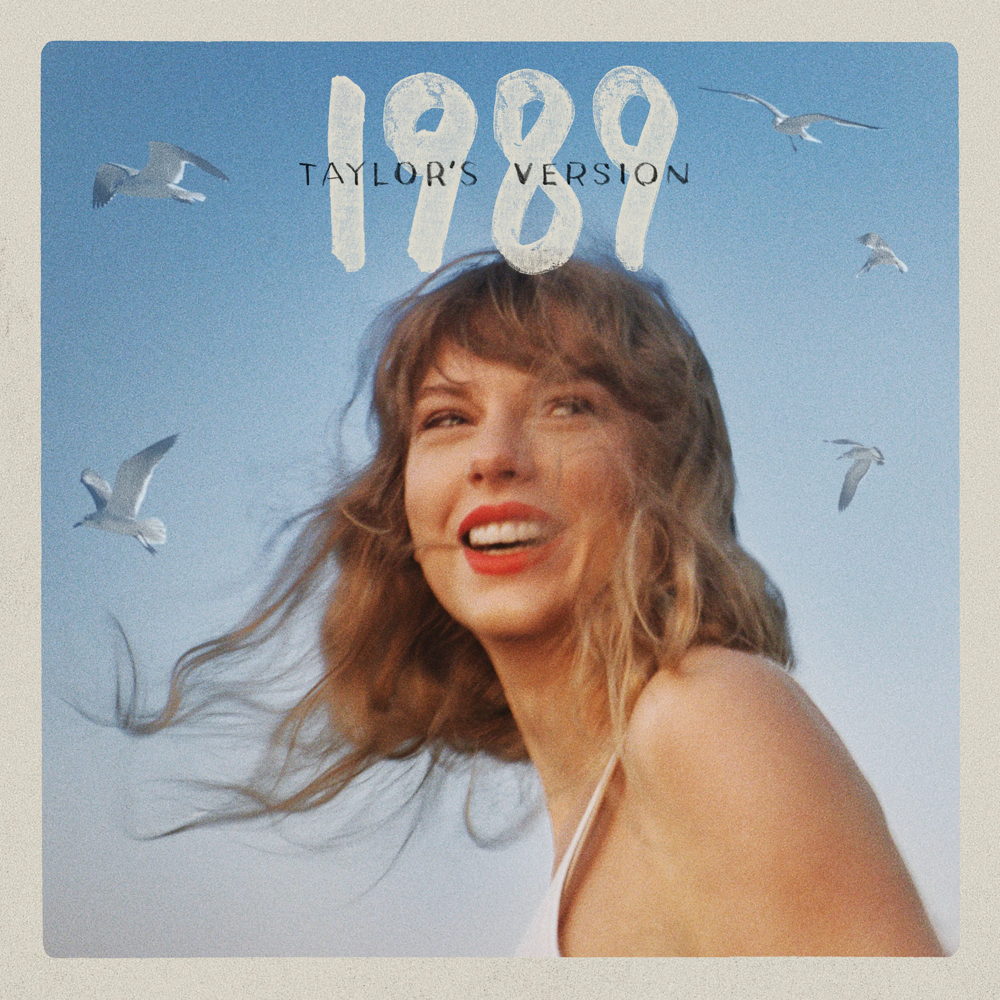
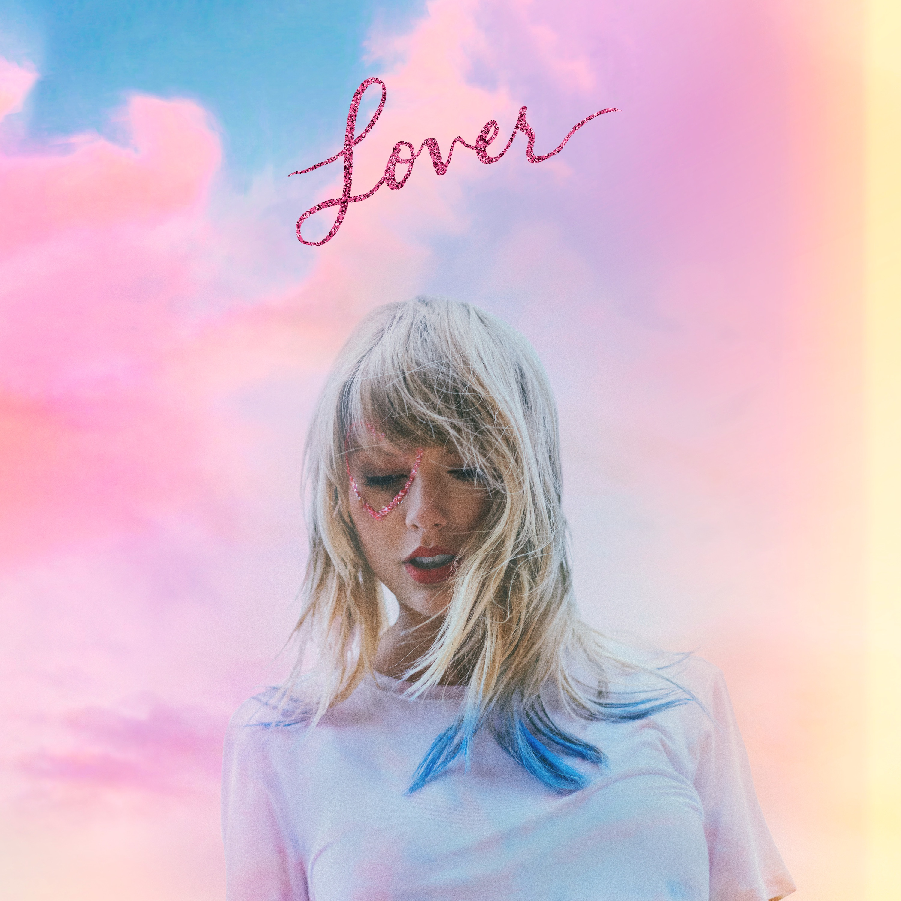
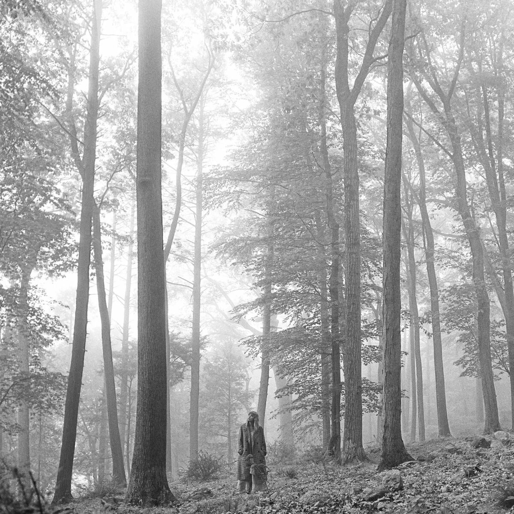

Albums

Red
Explora vários gêneros, incluindo pop e rock, como “We Are Never Ever Getting Back Together”.

1989
Primeiro álbum totalmente pop, com hits como “Shake It Off” e “Blank Space”.
Reputation
Som mais sombrio e eletrônico, com “Look What You Made Me Do” e “Delicate”.

Lover
Retorno ao pop mais leve e romântico, com “ME!” e “You Need to Calm Down”.

Folklore
Álbum indie-folk, introspectivo, com “Cardigan” e “Exile”.

Evermore
Continuação do estilo de “Folklore”, com “Willow” e “Champagne Problems”.

Midnights
Explora temas noturnos e introspectivos, com “Anti-Hero” e “Bejeweled”.

TTPD
The Tortured Poets Department Último lançamento, com uma mistura de estilos e letras profundas.